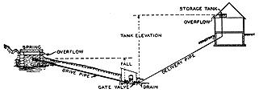
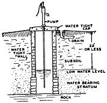
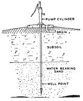
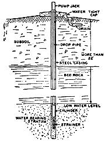
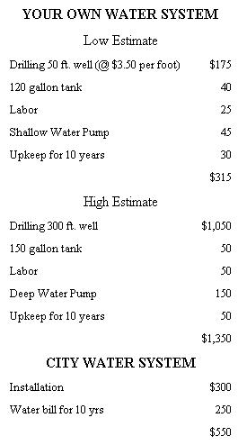

A SPRING is simply an opening where water flows
out of the ground. It may be located at the bottom
of a pond or lake. If you have a good spring near
your house you may be saved the expense of
digging a well. And if the spring is located on a high
enough level you may be able to use a gravity
system instead of a pump.
A RAM is really a sort of pump but it requires no
electricity or gasoline and has no moving parts and is
completely automatic. The water virtually pumps itself.
There must be at least a 20 inch fall of water between the
source and the ram. Under these conditions the ram will
pump water to a much higher level, as high as 20 feet.
A DUG WELL is the kind that is actually dug with hand digging tools. This
is the old fashioned type of well you see on many farms today. Wells are
not dug by hand so often nowadays as they used to be because it is
frequently easier to get a well driven or drilled. Another reason is that
the dug well is more easily contaminated by seepage through the walls or from
above. On the other hand, this type of well if properly constructed can be kept
entirely pure and provide plentiful quantities of water for generations.
If yours thinking of digging a well yourself, you'll
want to learn more about
this kind of well.
A DRIVEN WELL is made by driving into the ground a simple pipe fitted
with a well point. It may be either a doep or shallow well. depending on how
deep you go to get a satisfactory flow of water.
If your soil is suitable for this type of well
it is something worth investigating for it usually costs less than drilling
a well or digging one. It is not generally considered as reliable as an
Artesian well
(which produces a steady flow of water),. but in some sections it is quite satisfactory.
You need a good sized storage tank and you should
know what to do if the well points become clogged.
A DRILLED WELL is made by drilling a hole into the ground 4 to 8 inches
in diameter with special well-drilling equipment. The upper part of this well
is lined with a steel casing which protects it from contamination. If you think
you will have to go down deep to get water, you should learn more about
drilled wells. Also you will need to investigate deep and shallow well
pumps. The cost of a shallow well pump is much less and can be used with
a good Artesian well when you don't have to pump water up from over 22
feet.
WHEN we bought our house in the country the water, sewage, electricity, and driveway were supposedly all finished. They looked all right to us. But we've had to spend additional money on all four.
Our main expense was the need to rebuild our sewage system - the builder had installed a minimum amount of drainage pipe and no siphon discharge system. We've also piped water to our barn and to our concrete pig pen. It was an easy job to wire our barn with electricity.
We've had to add more fill and build an edging to our driveway. In short, we've found that knowing a little about country water supply, sewage, electricity, and road building is most worthwhile.
If you are used to city water service, you probably think it means an awful lot of expense and trouble to have your own rural water supply. The expense of digging a well is uncertain because you can't be absolutely sure how deep you will have to go. Still there are a lot of people living within 100 feet of a town water main who find it is less expensive to dig their own wells than to buy water from the city. One man I know, who is now building a house in town, has discovered that installing city water will cost him about $300. On top of this he will have to pay a water bill of about $25.00 a year. He figured up this bill for a period of ten years ($250) and added it to the $300 he would pay for installing the city water, getting a total of $550. When he compared this cost with that of drilling a good Artesian well 100 feet deep and putting in his own electric shallow well pumping system, he found that the city water over a 10 year period would cost him $50 more . . . And in 20 years this city water would cost $260 more. In 30 years he could install an entire new pump and tank and still beat the cost of city water for this period by $400!
As you can see, your well may cost you anywhere between $175 and $1,050. About the only way to predict this cost is to find out how deep your neighbors had to dig their wells. Unless there is something unusual about your situation, you will probably have to go to the same depth. Be sure to have your well water tested for purity. The Health Department will make this test free in most states.
We've discussed a few of the many ways you can obtain water in the country. There's probably one combination just right for your circumstances.
If you don't have city sewage disposal there are three practical solutions to your sewage problem: a cesspool, a septic tank, or a septic tank with a siphon discharge system.
Maybe you can use a cesspool, but on a long term basis you should consider spending a little more money and getting a septic tank.
After we bought our place, we discovered that our septic tank didn't have a siphon discharge system. This caused fouling of the ground near the tank. We had to dig up the whole system and found a siphon discharge tank was needed. The siphon discharge method distributes the sewage more forcefully so it spreads over a much wider ground area. Sometimes you can get by without the siphon discharge feature in a vacation home.
If your house has never been sup plied with electric power, measure the distance to the nearest power line. In our area the cost of getting this power to the house is about 25 cents a ft. You can reduce this cost by getting neighbors to come in with you. The more people on the line, the less each has to pay. Also, your contract with the power company should entitle you to a rebate when other people come in later. In wiring a house it's important not to underestimate the size of the wire needed. Some day you may want an electric stove, a freezer, electric power tools, or electricity in your barn and hen house so it's safer to use a no. 12 wire rather than a no. 14, the legal minimum.
Particularly today when land values are high you may save hundreds of dollars by buying land off the road and building your own road to it. Land not touched by a road may be a far more desirable site and usually sells at 30% or 50% less. If you build a road acceptable to your town or county, you can get it declared a public highway and have it kept up by the town.
Plans for Building a Septic Tank or C esspool, $1.00. Plumbing Installation and Repair by H. P. Manly, $2.00. House Wiring Made Easy, $1.65.
|
|
 |
 |
|
 |
 |
 |